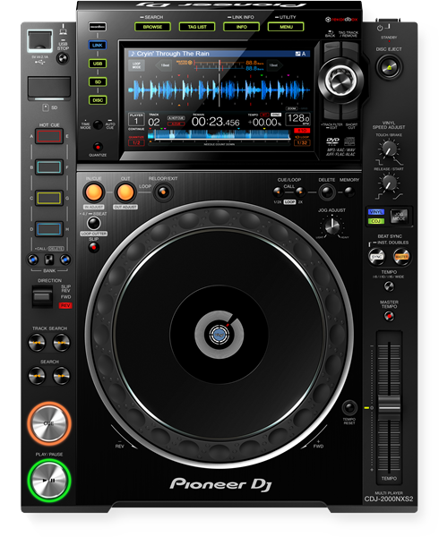

Lucio Andrés es un DJ oriundo de la ciudad de Río Grande, Tierra del Fuego que reside en Córdoba Capital. Siempre mantuvo una relación solida con la música encontrando influencias en el rock y en la música electrónica de los 2000. Sus presentaciones se caracterizan por su mentalidad práctica, conexión con el público y una selección músical enérgica que abarca varios géneros desde el techno hipnótico, Detroit, hard groove y notas de breakbeat. Su
Su influencia en la electrónica empezó por el 2005 cuando su hermano le regaló un CD del festival Creamfields, dando comienzo a su gusto por el género. En 2022 al ver potencial en sus mezclas, comienza su carrera como DJ presentandose en eventos locales y llegando a compartir cabina con artistas como Julianna, Marce del Boca, Ktrina, KET, Luciano Le Bihan, Centeno, Evegrem y Cata Enevoldsen.
Actualmente se encuentra trabajando en su primer EP donde revelará su identidad artística orientada al Hard Groove, implementando técnicas de producción adquiridas en su mayoría por aprendizaje auto diadcta.


Especificaciones
(Preferencias sujetas a disponibilidad)
3 Pioneer CDJ 2000 Nexus 2 (CDJ-2000NXS2)
1 Pioneer DJM 900 Nexus (DJM-900nexus)
